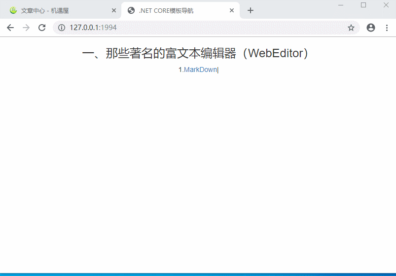

我们只需要一段加载代码就可以搞定MarkDown加载模板文件。

$("#md-demo").bind('click', function () {
$.get("/Lib/MarkDown/examples/test.md", function (md) {
testEditor = editormd("test-editormd", {
width: "99%",
height: 740,
path: "/Lib/MarkDown/lib/",
appendMarkdown: "\n" + md,
saveHTMLToTextarea: true,
watch: false,
htmlDecode: true,
toolbar: false,
previewCodeHighlight: false,
tex: true,
flowChart: true,
sequenceDiagram: true,
emoji: true,
taskList: true,
onload: function () {
console.log('onload', this);
this.config("lineNumbers", false);
this.config({
toc: false,
tex: false,
toolbar: true,
previewCodeHighlight: true,
flowChart: false,
sequenceDiagram: false,
dialogLockScreen: false,
dialogMaskOpacity: 0.5, // 设置透明遮罩层的透明度，全局通用，默认值为0.1
dialogDraggable: false,
dialogMaskBgColor: "#000"
});
this.config("onresize", function () {
console.log("onresize =>", this);
});
this.watch();
}
});
});
});
相关推荐：
1.在Asp.Net或.Net Core中配置使用MarkDown富文本编辑器有开源模板代码（代码是.net core3.0版本）
2.在Asp.Net Core中配置使用MarkDown富文本编辑器实现图片上传和截图上传（开源代码.net core3.0）
开源地址 动动小手，点个推荐吧！
注意：我们机遇屋该项目将长期为大家提供asp.net core各种好用demo，旨在帮助.net开发者提升竞争力和开发速度，建议尽早收藏该模板集合项目。